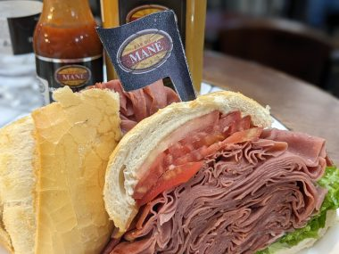
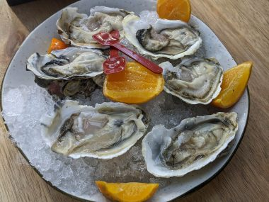
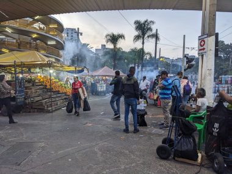

ブラジルのサンパウロ観光でおいしかったもの
前回ブラジルのサンパウロ観光～治安の良いエリアで安全なおすすめホテル～
まず、コーヒーは文句なしにおいしい。ホテルの朝食のコーヒーがおいしくてびっくりしてしまった。
そしてパンデケソ、日本語でいうポンデケージョ。買おうとおもえばほぼどこでもいつでも買えるくらいくらい手軽に買える。ぱくぱくとつい食べ過ぎてしまう。
初めて食べる本場ブラジルの味は意外に塩味がきいていたが、もちもちしておいしい。ホテルの朝食のブッフェで食べ放題だったのでぱくぱくと毎朝つい食べ過ぎてしまった。
ホテルの朝食といえば、オレンジとミックスしたアサイースムージーがおいしかった。街を歩いていると、コーヒーを出すカフェのような店でアサイースムージーも買うことができる。パンデケソと並び、ブラジルではとても身近なドリンクのよう。
健康食品店で、液状のアサイー１００パーセントの冷凍パウチを買ってみたら、アサイー自体はおいしくなかった。やはりオレンジやバナナとミックスして飲むものらしい。
街には量り売りでナッツを売る店をよくみかけて、欲しい量を買うことができる。ブラジルのナッツといえば、ラジルナッツとカシューナッツ。赤いのはドライフルーツのクコの実。おみやげに持って帰った。

ブラジルの果物を滞在中楽しみたい！というわけで、果物の買い出しにサンパウロ滞在初日に市場(Mercado Municipal)向かった。平日の午後だったが道が混んでてルネッサンスホテルから３０分かかってやっと着いた。Uberのアプリが心配して大丈夫かどうか連絡がきた。
お腹がすいていたので有名なモルタデラハムのサンドイッチを食べてみることにした。

フランスパンの間に極薄切りのモルタデラハムがこれでもかとみっちりと挟まっているサンドイッチ。二人でひとつ頼んで半分個して食べるのにちょうどいいボリューム。
しかし、フランスパンが固くてなかなかかみきれないのとハムの量が多すぎてとにかく食べにくい。そしてそもそもハムは塩分高いものなので大量のハムでそれはそれは塩辛い。レタスとトマトのサンドにしてよかった。チーズを選んでたらもっと塩からかっただろう。ビール飲むひとにはいいかもしれないな。一皿税込みで53.76レアル(1546円）。
この市場でおいしかったのは、生ガキだった。魚屋に併設されたレストランで食べるので新鮮。添えられたオレンジは、全く甘くなく、ライムのように酸っぱい。レモンやライムとはまた違う酸味が、生ガキとよくあうこと。６個で４２レアル。モルタデラハムサンドイッチの予算をこちらで使いたかった、、、。

お腹を満たした後はここに来た目的の果物を買うことにした。
この市場は、中へ入るとまず果物屋の試食の勧誘合戦がはじまる。
それでは、と試食していると、試食しているそばから次から次へ違う果物を切ってすすめてくる。
もともと果物を買うつもりで来たのでマンゴーを買うことにした。するとどこかへ行ってマンゴーを持ってきた。
どうやら店先に並べられている果物は試食用の展示品らしい。
潰れないように配慮された、熟れているかどうか触って確かめることはできないほど厳重にパックされたマンゴーを渡される。
大き目のマンゴー ２個で１３２２ｇ、値段は６４．７８レアル(1827円）
買ったマンゴーは確かにおおぶりで贈答品レベルの立派なものだったが、それにしても当然値段に観光客の試食し放題分も上乗せされているわけで、高いわけだ。ここではスーパーにおいてないようなよほど珍しい果物でないかぎり買ってはいけなかったと後悔。
今日食べたいから良く熟れているのがほしいと何度も念おしたのに、それほど熟れていなかった。ひとつは全く熟れていなく、部分的に固く野菜のよう。野菜としてぼりぼりたべるはめに。マンゴーはどこの店でも売ってるが、スーパーで売っているマンゴーはまだよく熟れていないものが多く、熟れているマンゴーを買いたくて市場へきたというのに。実際に触って選べないところでは買ってはいけなかったのだ。
マンゴーが高かったので、他の果物を買う気はすうかり失せて、市場からは退散。市場を後にして周辺を少し歩いてみることにした。
この日のサンパウロは冬。日が暮れるのが早くなる。夕暮れ時、市場の周辺南側では、通勤で帰宅途中の人向けに道路で露店が立ち並びはじめていた。炭火で焼いた串刺しの肉などが売られていてもくもくと煙がたつ。ホテルに帰ってあとでたべることにして買った。一串２００円ちょっとで買えた。

ついさっき市場で高いお金を払って買ったマンゴーがここでは激安で売られていた。こぶりで見栄えはしないが食べごろによく熟れているものがかごに盛られてならんでいる。さすがにマンゴーはもうこれ以上いらないので、スターフルーツを袋いっぱい買った。数百円でかなり大量に買えて大満足。スターフルーツは、皮をむく必要はなく、プラスティックのナイフでもさくさく切れて、梨のようなさっぱりとした甘さがおいしい。６日間の滞在中おいしくいただいた。
続き；ブラジル、おいしいサンパウロ～お値打ちミシュランガイド掲載レストラン～
↓↓↓使ってます（アフェリエイト）↓↓↓
↓オンラインですべて手続き完了できる